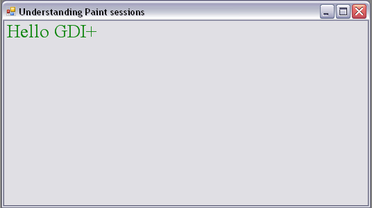
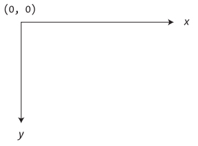
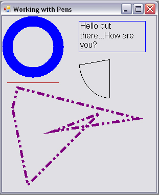
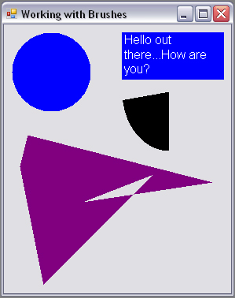

Chapter 20 - Rendering Graphical Data with GDI+
Content
The point of this chapter is to examine the details of rendering graphics (including stylized text and image data) onto a Form's surface area.
We'll begin by taking a high-level look at the numerous drawing-related namespaces, and we'll examine the role of the Paint event,and the almighty Graphics object.
The remainder of this chapter covers how to manipulate colors, fonts, geometric shapes, graphical images and the .NET resource format.
While technically not part of GDI+ proper, resources often involve the manipulation of graphical data.
Introduction to GDI+ namespaces
The .NET platform provides a number of namespaces devoted to two-dimensional graphical rendering. In addition to the basic functionality you would expect to find in a graphics toolkit
(colors, fonts, pens, brushes, etc.), you also find types that enable geometric transformations, antialiasing, palette blending, and document printing support.
Collectively speaking, these namespaces make up the .NET facility we call GDI+, which is a managed alternative to the Win32 Graphical Device Interface (GDI) API.
The below table gives a high-level view of the core GDI+ namespaces.
| System.Drawing |
This is the core GDI+ namespace that defines numerous types for basic rendering (fonts, pens, basic brushes, etc.) as well as the almighty Graphics type.
|
| System.Drawing.Drawing2D |
This namespace provides types used for more advanced two-dimensional/vector graphics functionality (e.g., gradient brushes, pen caps, geometric transforms, etc.).
|
| System.Drawing.Imaging |
This namespace defines types that allow you to manipulate graphical images (e.g., change the palette, extract image metadata, manipulate metafiles, etc.).
|
| System.Drawing.Printing |
This namespace defines types that allow you to render images to the printed page, interact with the printer itself, and format the overall appearance of a given print job.
|
| System.Drawing.Text |
This namespace allows you to manipulate collections of fonts.
|
An overview of the System.Drawing namespace
The vast majority of the types you'll use when programming GDI+ applications are found within the System.Drawing namespace.
There are classes that represent images, brushes, pens, and fonts. Furthermore, System.Drawing defines a number of related utility types such as Color, Point, and Rectangle.
The below table lists some (but not all) of the core types.
| Bitmap |
This type encapsulates image data (*.bmp or otherwise). |
| Brush |
Brush objects are used to fill the interiors of graphical shapes such as rectangles, ellipses, and polygons.
|
| Brushes |
| SolidBrush |
| SolidBrushes |
| TextureBrush |
| BufferedGraphics |
This new .NET 2.0 type provides a graphics buffer for double buffering, which is used to reduce or eliminate flicker caused by redrawing a display surface.
|
| Color |
The Color and SystemColors types define a number of static read-only properties used to obtain specific colors for the construction of various pens/brushes.
|
| SystemColors |
| Font |
The Font type encapsulates the characteristics of a given font (i.e., type FontFamily name, bold, italic, point size, etc.).
FontFamily provides an abstraction for a group of fonts having a similar design but with certain variations in style.
|
| FontFamily |
| Graphics |
This core class represents a valid drawing surface, as well as a number of methods to render text, images, and geometric patterns.
|
| Icon |
These classes represent custom icons, as well as the set of standard system-supplied icons.
|
| SystemIcons |
| Image |
Image is an abstract base class that provides functionality for the Bitmap, Icon, and Cursor types.
ImageAnimator provides a way to iterate over a number of Image-derived types at some specified interval.
|
| ImageAnimator |
| Pen |
Pens are objects used to draw lines and curves. The Pens type defines a number of static properties that return a new Pen of a given color.
|
| Pens |
| SystemPens |
| Point |
These structures represent an (x, y) coordinate mapping to an underlying integer or float, respectively.
|
| PointF |
| Rectangle |
These structures represent a rectangular dimension (again mapping to an underlying integer or float).
|
| RectangleF |
| Size |
These structures represent a given height/width (again mapping to an underlying integer or float).
|
| SizeF |
| StringFormat |
This type is used to encapsulate various features of textual layout (i.e., alignment, line spacing, etc.) |
| Region |
This type describes the interior of a geometric image composed of rectangles and paths. |
Understanding the Graphics class
The System.Drawing.Graphics class is the gateway to GDI+ rendering functionality. This class not only represents the surface you wish to draw upon
(such as a Form's surface, a control's surface, or region of memory), but also defines dozens of members that allow you to render text, images
(icons, bitmaps, etc.), and numerous geometric patterns. The below table gives a partial list of members.
| FromHdc() |
These static methods provide a way to obtain a valid Graphics object from a given image (e.g., icon, bitmap, etc.) or GUI widget.
|
| FromHwnd() |
| FromImage() |
| Clear() |
Fills a Graphics object with a specified color, erasing the current drawing surface in the process.
|
| DrawArc() |
These methods are used to render a given image or geometric pattern. As you will see, DrawXXX()methods require the use of GDI+ Pen objects.
|
| DrawBezier() |
| DrawBeziers() |
| DrawCurve() |
| DrawEllipse() |
| DrawIcon() |
| DrawLine() |
| DrawLines() |
| DrawPie() |
| DrawPath() |
| DrawRectangle() |
| DrawRectangles() |
| DrawString() |
| FillEllipse() |
These methods are used to fill the interior of a given geometric shape. As you will see, FillXXX()methods require the use of GDI+ Brush objects.
|
| FillPath() |
| FillPie() |
| FillPolygon() |
| FillRectangle() |
Reads staeful properties of the Graphics class at page 654 of textbook.
Understanding Paint sessions
The most common way to obtain a Graphics object is to interact with the Paint event. When you want a Form to render graphical data to its surface,
you may override this method and extract a Graphics object from the incoming PaintEventArgs parameter.
To illustrate, create a new Windows Forms application named BasicPaintForm, and update the Form-derived class as so:
public partial class MainForm : Form
{
public MainForm()
{
InitializeComponent();
CenterToScreen();
this.Text = "Basic Paint Form";
}
protected override void OnPaint(PaintEventArgs e)
{
base.OnPaint(e);
Graphics g = e.Graphics;
g.DrawString("Hello GDI+", new Font("Times New Roman", 20), Brushes.Green, 0, 0);
}
}
Here is output of this program.

Obtaining a Graphics object outside of a Paint event handler
In some rare cases, you may need to access a Graphics object outside the scope of a Paint event handler. For example, assume you wish to draw a small circle at the (x, y) position
where the mouse has been clicked. To obtain a valid Graphics object from within the scope of a MouseDown event handler, one approach is to call the static Graphics.FromHwnd()method.
An HWND is a data structure that represents a given Win32 window. Under the .NET platform, the inherited Handle property extracts the underlying HWND, which can be used as a parameter to Graphics.FromHwnd():
private void MainForm_MouseDown(object sender, MouseEventArgs e)
{
Graphics g = Graphics.FromHwnd(this.Handle);
g.FillEllipse(Brushes.Firebrick, e.X, e.Y, 10, 10);
g.Dispose();
}
The default unit of measure
Under GDI+, the default unit of measure is pixel-based. The origin begins in the upper-left corner with the x-axis increasing to the right and the y-axis increasing downward.

Defining a Color value
Many of the rendering methods defined by the Graphics class require you to specify the color that should be used during the drawing process.
The System.Drawing.Color structure represents an alpha-red-green-blue (ARGB) color constant. Most of the Color type's functionality comes by way of a number of static read-only properties,
which return a specific Color type:
Color c = Color.PapayaWhip;
If the default color values do not fit the bill, you are also able to create a new Color type and specify the A, R, G, and B values using the FromArgb()method:
Color myColor = Color.FromArgb(0, 255, 128, 64);
As well, using the FromName()method, you are able to generate a Color type given a string value. The characters in the string parameter must match one of the members in the KnownColor enumeration
(which includes values for various Windows color elements such as KnownColor.WindowFrame and KnownColor.WindowText):
Color myColor = Color.FromName("Red");
Regardless of the method you use, the Color type can be interacted with using a variety of members:
- GetBrightness(): Returns the brightness of the Color type based on hue-saturation-brightness (HSB) measurements.
- GetSaturation(): Returns the saturation of the Color type based on HSB measurements.
- GetHue(): Returns the hue of the Color type based on HSB measurements.
- IsSystemColor: Determines if the Color type is a registered system color.
- A, R, G, B: Returns the value assigned to the alpha, red, green, and blue aspects of a Color type.
Manipulating Fonts
The System.Drawing.Font type represents a given font installed on the user's machine. Font types can be defined using any number of overloaded constructors.
Here are a few examples:
Font f = new Font("Times New Roman", 12);
Font f2 = new Font("WingDings", 50, FontStyle.Bold | FontStyle.Underline);
Here, f2 has been created by OR-ing together a set of values from the FontStyle enumeration:
public enum FontStyle
{
Regular, Bold,Italic, Underline, Strikeout
}
Once you have configured the look and feel of your Font object, the next task is to pass it as a parameter to the Graphics.DrawString()method.
Although DrawString() has also been overloaded a number of times, each variation typically requires the same basic information: the text to draw,
the font to draw it in, a brush used for rendering, and a location in which to place it.
private void MainForm_Paint(object sender, PaintEventArgs e)
{
Graphics g = e.Graphics;
g.DrawString("My string", new Font("WingDings", 25), Brushes.Black, new Point(0,0));
g .DrawString("Another string", new Font("Times New Roman", 16), Brushes.Red, 40, 40);
}
Working with Pens
GDI+ Pen types are used to draw lines between two end points. However, a Pen in and of itself is of little value.
When you need to render a geometric shape onto a Control-derived type, you send a valid Pen type to any number of render methods defined by the Graphics class.
In general, the DrawXXX()methods are used to render some set of lines to a graphics surface and are typically used with Pen objects.
There is example of rendering some geometric images using simple Pen types.
private void MainForm_Paint(object sender, PaintEventArgs e)
{
Graphics g = e.Graphics;
Pen bluePen = new Pen(Color.Blue, 20);
Pen pen2 = Pens.Firebrick;
g.DrawEllipse(bluePen, 10, 10, 100, 100);
g.DrawLine(pen2, 10, 130, 110, 130);
g.DrawPie(Pens.Black, 150, 10, 120, 150, 90, 80);
Pen pen3 = new Pen(Color.Purple, 5);
pen3.DashStyle = DashStyle.DashDotDot;
g.DrawPolygon(pen3, new Point[]{new Point(30, 140),
new Point(265, 200), new Point(100, 225),
new Point(190, 190), new Point(50, 330),
new Point(20, 180)});
Rectangle r = new Rectangle(150, 10, 130, 60);
g.DrawRectangle(Pens.Blue, r);
g.DrawString("Hello out there...How are ya?", new Font("Arial", 12), Brushes.Black, r);
}
Notice that the Pen used to render your polygon makes use of the DashStyle enumeration (defined in System.Drawing.Drawing2D):
public enum DashStyle
{
Solid, Dash, Dot, DashDot, DashDotDot, Custom
}
The below figure shows the final output of this Paint event handler.

Working with Brushes
System.Drawing.Brush-derived types are used to fill a region with a given color, pattern, or image. The Brush class itself is an abstract type and cannot be directly created.
However, Brush serves as a base class to the other related brush types (e.g., SolidBrush, HatchBrush, LinearGradientBrush, and so forth). In addition to specific Brush-derived types,
the System.Drawing namespace also defines two helper classes that return a configured brush using a number of static properties: Brushes and SystemBrushes.
In any case, once you obtain a brush, you are able to call any number of the FillXXX() methods of the Graphics type.
Here is a small sample program that makes use of various Brushes:
private void MainForm_Paint(object sender, PaintEventArgs e)
{
Graphics g = e.Graphics;
SolidBrush blueBrush = new SolidBrush(Color.Blue);
SolidBrush pen2 = (SolidBrush)Brushes.Firebrick;
g.FillEllipse(blueBrush, 10, 10, 100, 100);
g.FillPie(Brushes.Black, 150, 10, 120, 150, 90, 80);
SolidBrush brush3= new SolidBrush(Color.Purple);
g.FillPolygon(brush3, new Point[]{ new Point(30, 140),
new Point(265, 200), new Point(100, 225),
new Point(190, 190), new Point(50, 330),
new Point(20, 180)} );
Rectangle r = new Rectangle(150, 10, 130, 60);
g.FillRectangle(Brushes.Blue, r);
g.DrawString("Hello out there...How are ya?",
new Font("Arial", 12), Brushes.White, r);
}

Rendering Images
The final type you'll examine in this chapter is the Image class and related subtypes. The abstract System.Drawing.Image type defines a number of methods and properties
that hold various bits of information regarding the underlying image data it represents. For example, the Image class supplies the Width, Height, and Size properties to retrieve the dimensions of the image.
Other properties allow you to gain access to the underlying palette. The Image class defines the coremembers shown in the below table.
| FromFile() |
This static method creates an Image from the specified file. |
| FromStream() |
This static method creates an Image from the specified data stream. |
| Height |
These properties return information regarding the dimensions of this Image. |
| Width |
| Size |
| HorizontalResolution |
| VerticalResolution |
| Palette |
This property returns a ColorPalette data type that represents the underlying palette used for this Image.
|
| GetBound() |
This method returns a Rectangle that represents the current size of this Image. |
| Save() |
This method saves the data held in an Image-derived type to file. |
Understanding the .NET Resource format
An assembly is a collection of types and optional resources. Given this, your final task of the chapter is to learn how to bundle external resources
(such as image files and strings) into the assembly itself. In this way, your .NET binary is truly self-contained. At the lowest level, buidling external resources into a .NET assembly involves the following steps:
- Create an *.resx file that establishes name/value pairs for each resource in your application via XML data representation.
- Use the resgen.exe command-line utility to convert your XML-based *.resx file into a binary equivalent (a *.resources file)
- Using the /resource flag of the C# compiler, embed the binary *.resources file into your assembly.
As you might suspect, these steps are automated when using Visual Studio. Reads generating resources using Visual Studio and programmatically reading resources at page 695 to 697 of textbook.
Summary
GDI+ is the name given to a number of related .NET namespaces, each of which is used to render graphic images to a Control-derived type.
The bulk of this chapter was spent examining how to work with core GDI+ object types such as colors, fonts, graphics images, pens, and brushes in conjunction with the almighty Graphics type.
This chapter wrapped up by examining the new .NET resource format. As shown, a *.resx denotes resources using a set of name/value pairs describes as XML.
This file can be fed into the resgen.exe utility, resulting in a binary format (*.resources) that can then be embedded into a related assembly.
Finally, the ResourceManager type provides a simple way to programmatically retrieve embedded resources at runtime.